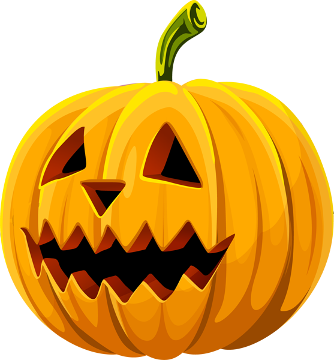
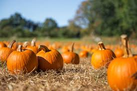

Lab 15: Fancy CSS 1
Challlenge
In this lab, we learned a few new lines of code. This assignment will require us to make an eyesore of a lab. Gradients, shadows, filters and more will have to be added in order to be sufficent.
Problems
No problems occured during this lab. Compared to the two previous assignments, this was just a basic cakewalk.
Results
The pumpkin image have been roated, and blurred. The london eye has a box shadow and object fitted. The "example text" only has a text shadow. The HTML border have been changed to be rounded, and the solid blue background changed to a gradient. All of the bases are now covered.
 welcome to the example text